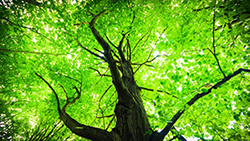

Color 1:
Green
Feelings/Ideas Green Conveys
If you look outside, you can probably still see the abundance of green
in our environment even though we are currently transitioning to fall.
However, even when green disappears for the season, the color does not
lose its conveyance of nature and growth. This conveyance is not lost
as the color is used in web design. Websites that use green "can give
users feelings of calm, rejuvenation, affluence and optimism" (Barker).
Since green is invocative of nature, many environmental websites will
use the color to tie their mission to help nature with the color most
associated with it. This connection to nature makes green a cool color.
How Green is Used
Designers will choose a shade of green depending on what they want their
website to invoke. If companies want to invoke a sense of prestige or
growth, a dark green is used. Bright greens are generally used to make a
website or company seem lively and energetic, usually this color is tied
to websites of companies that deal with the environment. However, in
websites that are not entirely green, "Many designers reveal that their
call to action section/button receives more clicks and attention when they
are green in color." ("Anatomy of Colors in Web Design: Green and
Environmental Concept."). This is potentially due to the contrasting
colors designers use to make their action buttons pop from the background
and make them seem important.
Green Image

Sources:
1) "Anatomy of Colors in Web Design: Green and Environmental Concept." Onextrapixel, 3 Nov. 2009,
onextrapixel.com/anatomy-of-colors-in-web-design-green-and-environmental-concept/.
2) Barker, Shane. "The Psychology of Color in Web Design." Vandelay Design, Vandelay Design, 26 Apr. 2016,
www.vandelaydesign.com/the-psychology-of-color-in-web-design/.
3) https://media.mnn.com/assets/images/2016/06/big-green-tree.jpg.653x0_q80_crop-smart.jpg